Minecraft Java 1.20.1 – 26.3 · Fabric, Forge, NeoForge
Your models.
On your player.
Orbit puts your own Blockbench models on your Minecraft player: hats, wings, backpacks, tails. They animate, react to how you move, and every Orbit player sees them, on any server. Emotes, friends, parties and a HUD of your own come with it.
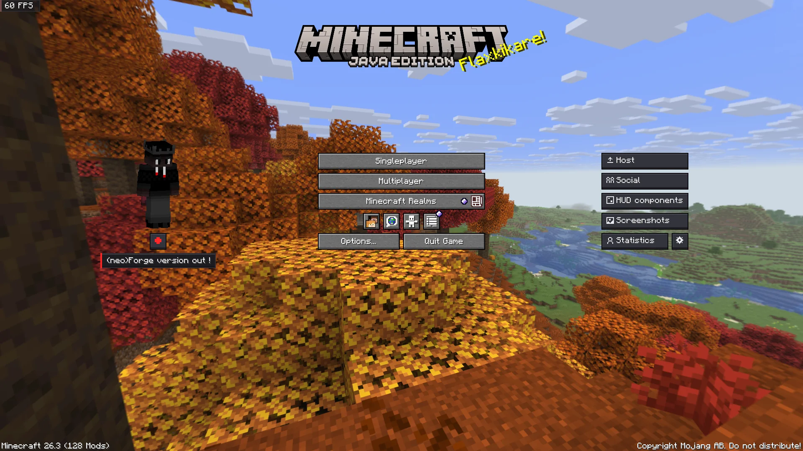
What it does
Drop a .bbmodel file in a folder, pick it in the Orbit menu, and wear it.
Straight from Blockbench
Models as they are, with their animations, animated textures and physics. Nothing to convert.
Seen by everyone
Every Orbit player sees what you wear, on any server, through Orbit Cloud. The server needs nothing installed.
Emotes
Put your emotes on a wheel and play them with a key. Other players see them too.
Featured Catalog
Cosmetics and emotes picked by the Orbit team, free to claim. They follow your account to any computer.
Friends
Messages and group chats, screenshots and world invites, a profile page, and worlds your friends host.
Parties
Start a party with friends, go to a server together with one vote, and see their health on your HUD.
Your HUD
FPS, coordinates, keystrokes, a compass, your inventory and more, placed and sized anywhere.
Screenshots and zoom
Edit, crop and send screenshots right after taking them, browse them all, and zoom with C.
Safe by design
Every file is checked before it is drawn, players can be reported, and messages can be end-to-end encrypted.
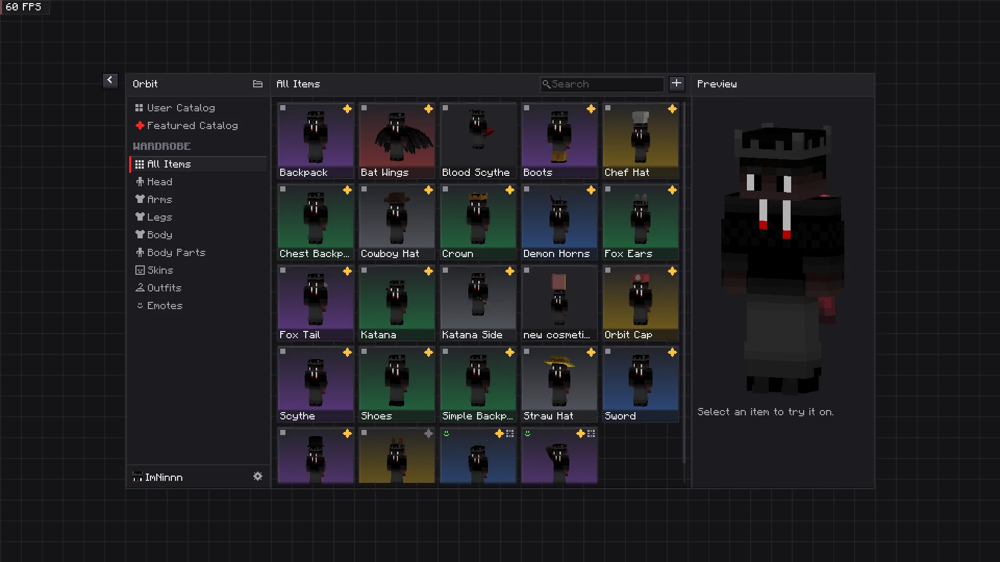
The Orbit menu
Press B, or click the Wardrobe button under your player on the title and pause screens. Everything shows in 3D on your own skin.
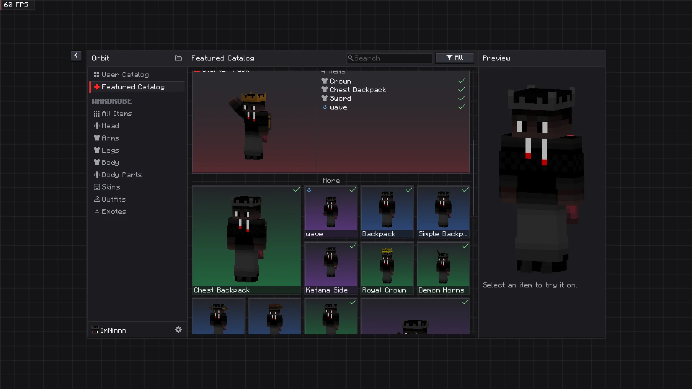
The Featured Catalog
Claim cosmetics and emotes made for Orbit, and wear them right away.
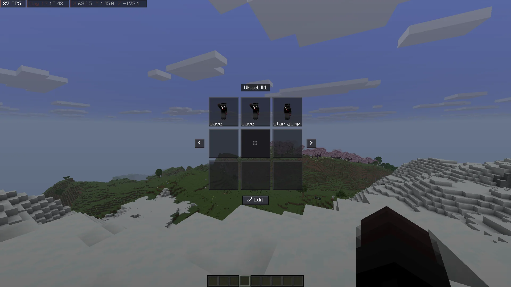
Emotes on a wheel
Hold R, point at an emote and let go. Several wheels, eight emotes each.
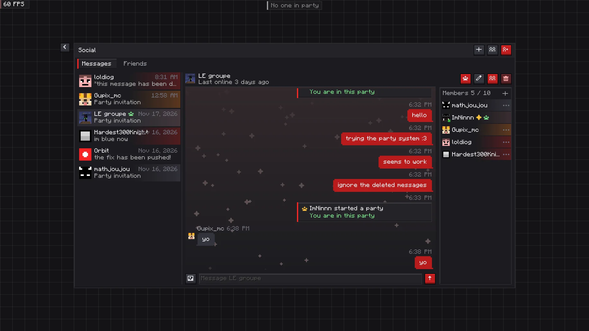
Friends and group chats
Chat with friends one to one or in groups, end-to-end encrypted, and send them screenshots, cosmetics and world invites. Chats can float over the game too.
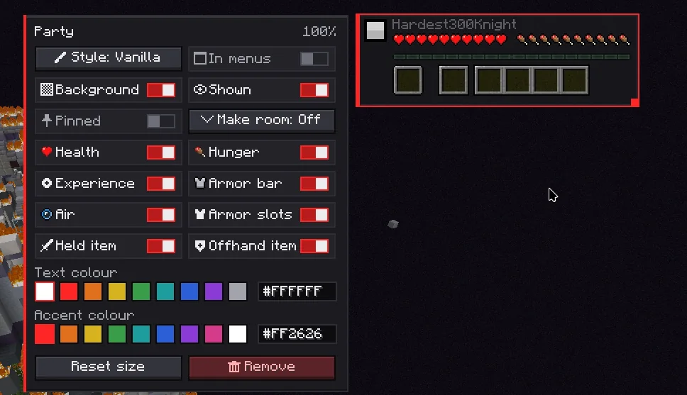
Play as a party
Start a party in any chat. Pick a server and the others are asked to come along: everyone who joins goes there together. Your party's health, hunger and armour show on your HUD.
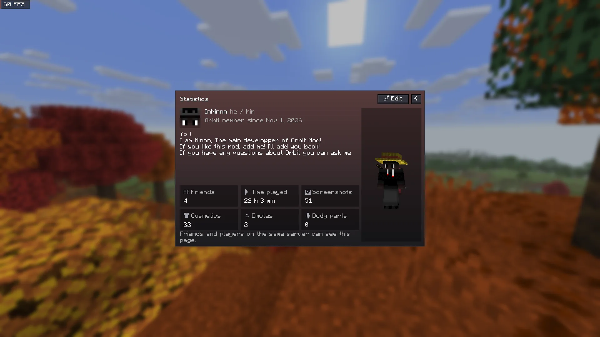
Your profile
Time played, your collection, a description and the outfit you want to show.
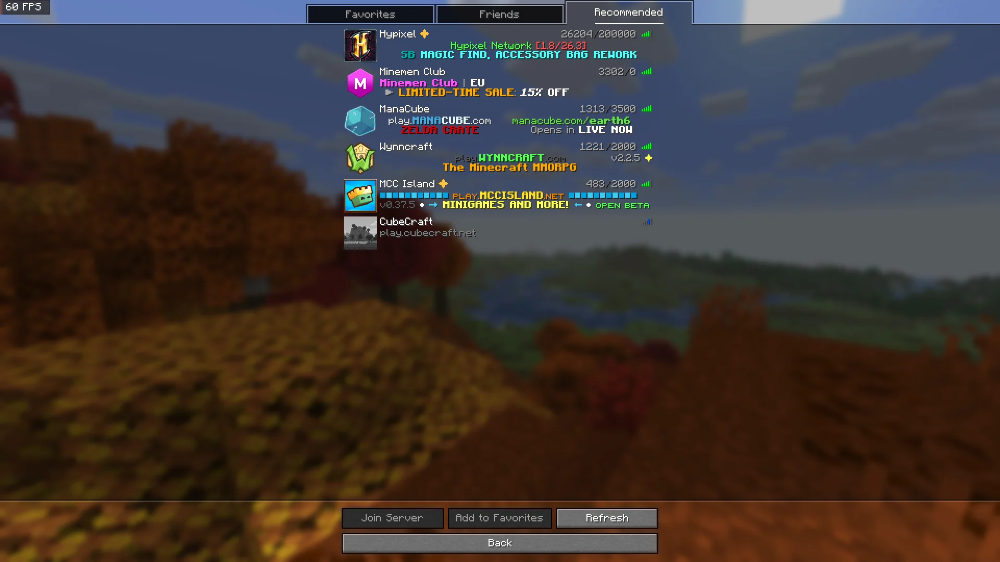
Find somewhere to play
The Multiplayer screen gets two more tabs: the worlds your friends host, and recommended servers.
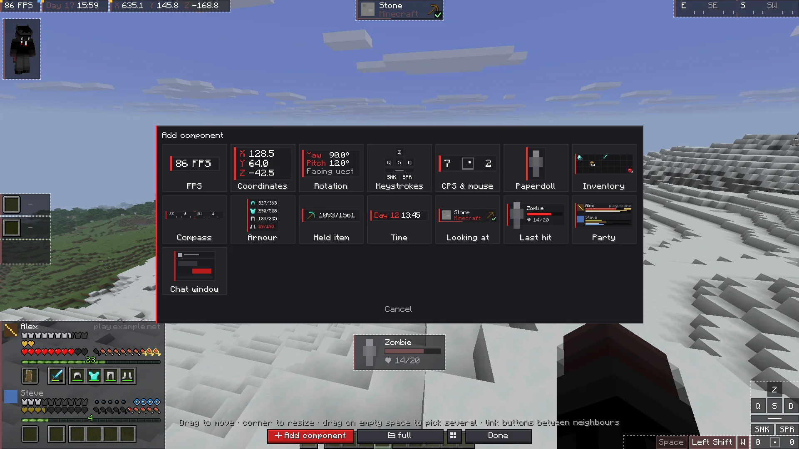
A HUD of your own
FPS, coordinates, rotation, keystrokes and clicks, a paperdoll, your inventory, a compass ribbon and chat windows. Drag them where you want them and size them as you like.
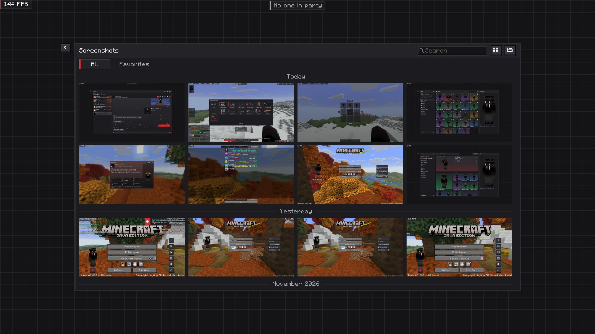
Screenshots
Press F2 and a preview pops up: edit, favourite, copy or send the picture. Browse them all by day, with favourites and search.
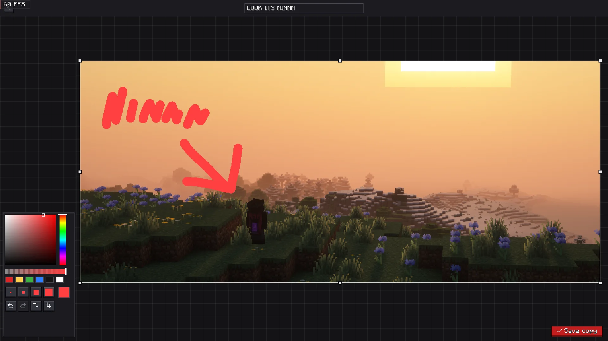
Draw on them
Draw and write on your screenshots, crop, rotate and rename them, and save a copy.
Download
Pick the jar for your Minecraft version and mod loader. Orbit 2.0.0, made by the Orbit team.
Fabric
Forge and NeoForge
Questions
Do other players need the mod to see my cosmetics?
Yes. Cosmetics are drawn by Orbit, so only players who have it see them. Players without it play normally.
Does the server need anything installed?
No. Orbit works through Orbit Cloud, as long as you play with a real Minecraft account.
Does it work with Fresh Animations?
Yes. Cosmetics follow the model that is actually drawn, including Entity Model Features packs such as Fresh Animations.
Which Minecraft versions are supported?
Minecraft Java 1.20.1, 1.21 – 1.21.1, 1.21.6 – 1.21.11 and 26.1 – 26.3 on Fabric (with Fabric API), 1.20.1 on Forge and 1.21.1 on NeoForge. Download the jar made for your version and loader. Players on different versions see each other's cosmetics and can be friends and play in a party together.
Does it work with Sodium, Iris and other mods?
Yes. Orbit is tested with Sodium, Embeddium, Iris and Oculus (shaders on), Entity Model Features, playerAnimator and Better Combat, Epic Fight, First-Person Model and Curios.